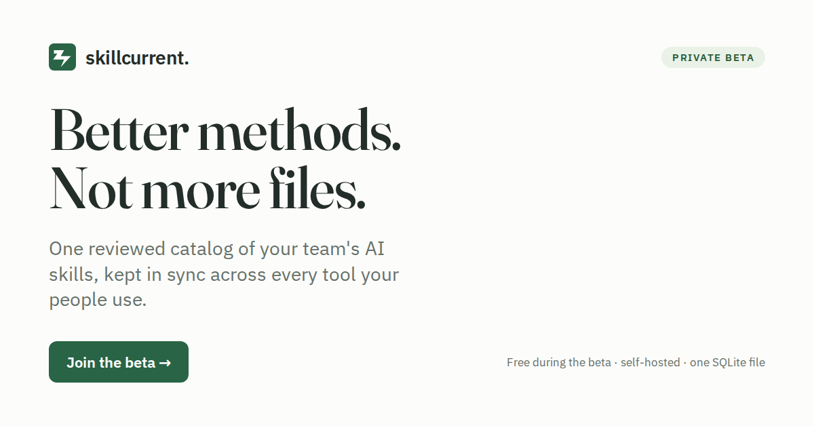
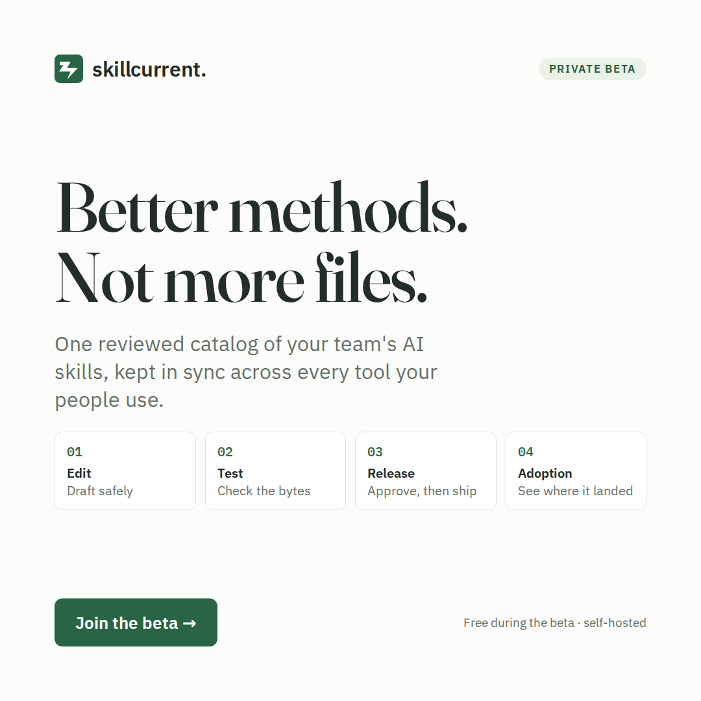
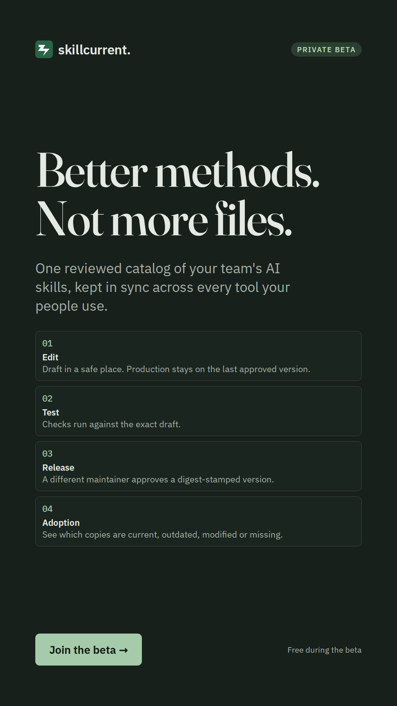
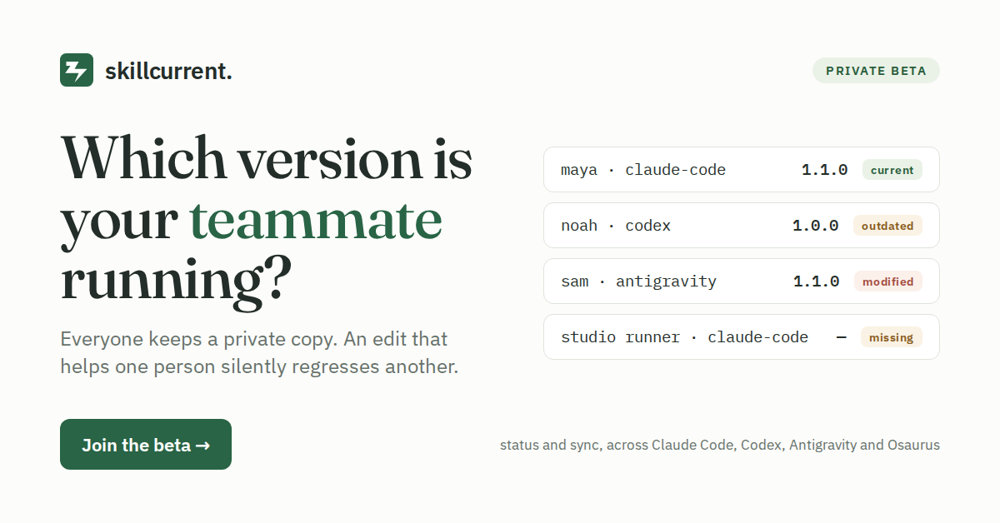
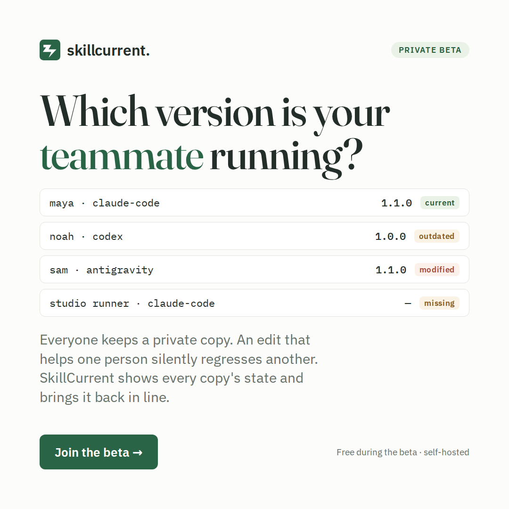
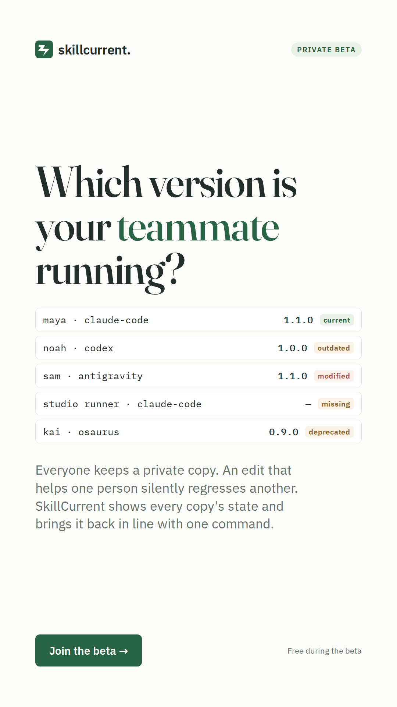
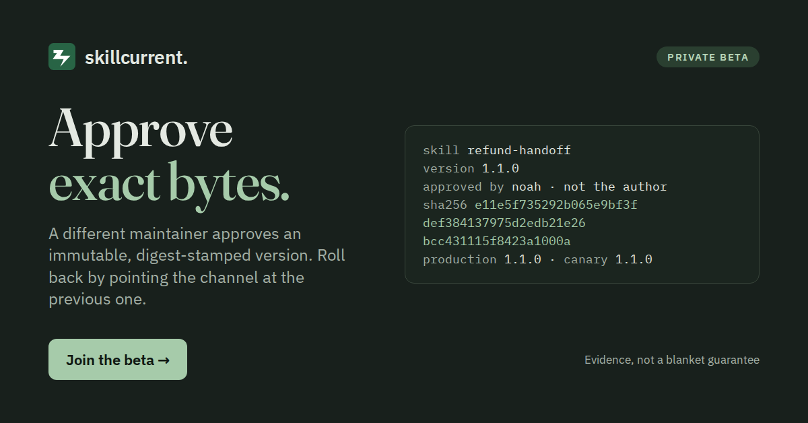
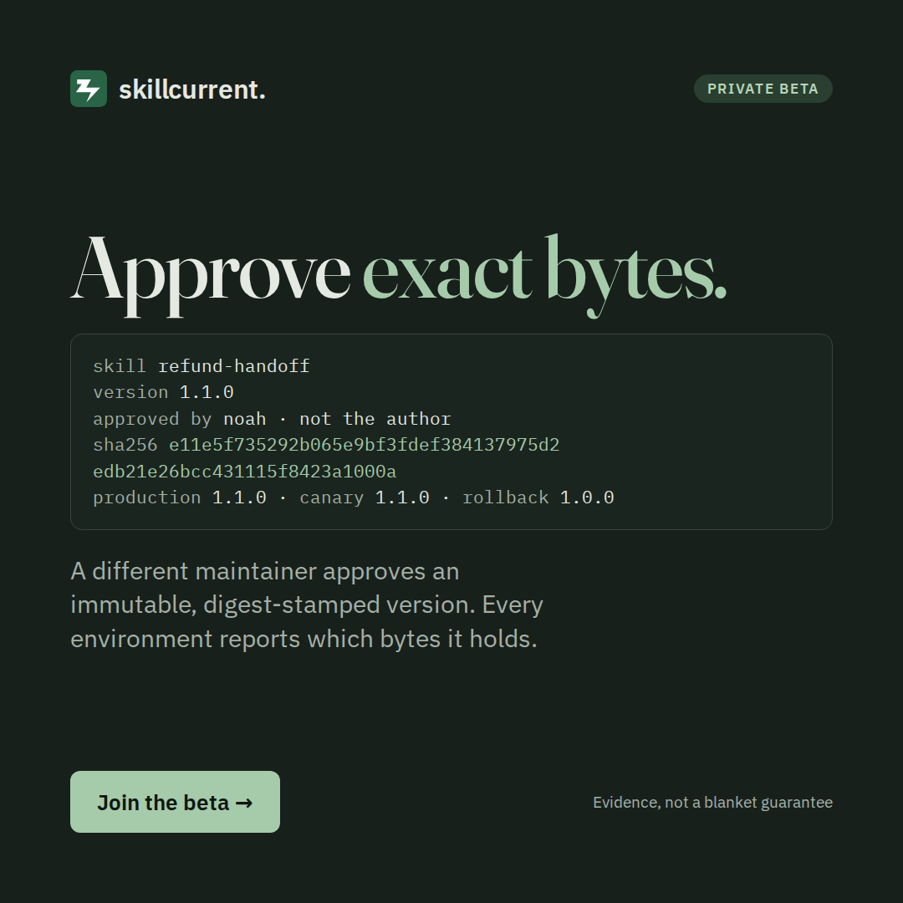
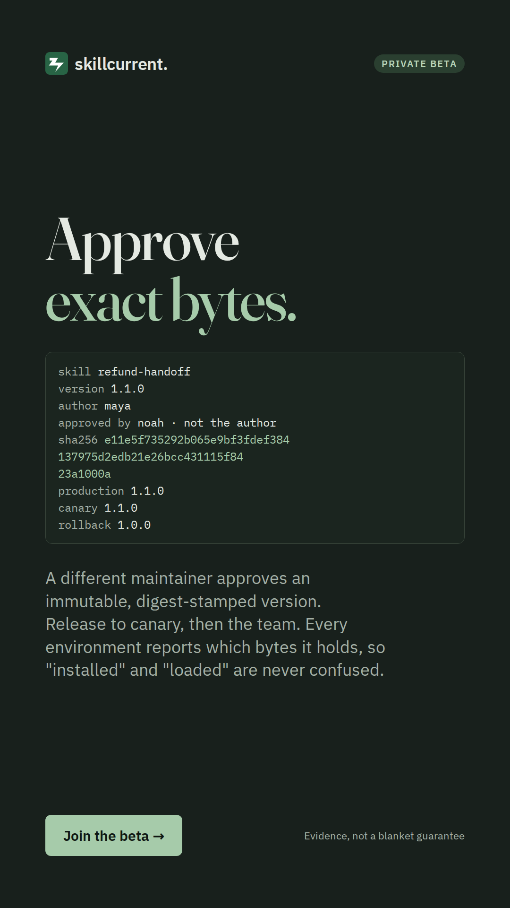

Everything here follows the same rules as the landing page: one conversion goal (join the beta), and nothing we can't back with the shipped tool. Creatives are rendered from the brand tokens the app uses; the source lives in the repo under marketing/ads/ and re-renders with one command.
| Concept | Headline | Audience and placement | Theme |
|---|---|---|---|
| method | Better methods. Not more files. | Cold audiences, newsletter sponsorships, link previews (OG image). The brand line; safe everywhere. | light (story in dark) |
| drift | Which version is your teammate running? | Communities that already feel the pain (r/ClaudeAI, r/ChatGPTCoding), retargeting, X. The problem, shown. | light |
| bytes | Approve exact bytes. | Platform, DX and security leads; LinkedIn; Show HN. The governance angle. | dark |
Brand line. Light theme at card and feed size, dark for the story format so the set has range.

method-1200x628.png · link card / OG
method-1080x1080.png · feed
method-1080x1920.png · storyThe problem, shown as the adoption table the tool actually produces: current, outdated, modified, missing.

drift-1200x628.png · link card / OG
drift-1080x1080.png · feed
drift-1080x1920.png · storyThe governance angle: a real-shaped release record with the digest and the "not the author" approver.

bytes-1200x628.png · link card / OG
bytes-1080x1080.png · feed
bytes-1080x1920.png · storyEach block has a copy button. Replace [link] with your landing page URL (/beta on your SkillCurrent host).
Better methods. Not more files. Your team's AI skills live in ~/.claude/skills, ~/.codex/skills, .agents/skills… one private copy per person. Nobody knows which version a teammate runs, and an edit that helps one person silently regresses another. SkillCurrent is one reviewed catalog for those skills. Draft in a safe place. Run checks against the exact draft. A different maintainer approves an immutable, digest-stamped version. Then status and sync show every copy as current, outdated, modified or missing. We're onboarding 5 to 10 teams that use two or more AI coding tools. Free during the beta, self-hosted, standard library only, one SQLite file. Join the beta → [link]
Which version of that skill is your teammate running? If the answer is "whichever one they copied last," you already know how this ends: the fix that helped one person quietly breaks another, and nobody can say when. SkillCurrent keeps one reviewed catalog and tells every environment whether its copy is current, outdated, modified or missing. One command brings it back in line. Beta, free, self-hosted. We want 5 to 10 teams on two or more AI coding tools → [link]
Approve exact bytes. Approval that attaches to a moving document isn't approval. In SkillCurrent a different maintainer approves an immutable version with its SHA-256, a channel points at it, and rollback means pointing the channel back. Every environment reports which bytes it holds. Evidence, not a blanket guarantee: a passing check says something about those bytes, never about how an agent will behave. Private beta for platform and AI-enablement teams → [link]
Better methods. Not more files. One reviewed catalog of your team's AI skills, synced across Claude Code, Codex, Antigravity and Osaurus. Private beta, free, self-hosted → [link] Which version of that skill is your teammate running? If you don't know, that's the product. SkillCurrent: status, sync, and an approval that attaches to exact bytes. Beta → [link] Approve exact bytes. A different maintainer signs off on a digest-stamped version; rollback points the channel back. Skills for AI coding tools, done like software. Beta → [link] "Installed" is not the same as "loaded." SkillCurrent's adoption view shows which is which for every environment. Private beta for teams on 2+ AI coding tools → [link]
Title: We built a reviewed catalog for team AI skills (SKILL.md) — looking for 5–10 beta teams Our team shares skills for Claude Code and Codex by copying SKILL.md folders around. It works until it doesn't: someone improves a skill, someone else is still on the old copy, a third person edited theirs by hand, and nobody can say which version caused the bad run. SkillCurrent is a small self-hosted tool that fixes exactly that and nothing more: - one catalog; drafts go through checks (structure, no secrets, no machine paths, your own rules) - a different maintainer approves; the version is immutable and carries its SHA-256 - canary and production channels, rollback by pointing the channel back - status / sync show every copy as current, outdated, modified, missing or deprecated Python 3.11, no dependencies, one SQLite file, CLI + web UI. Free during the beta. We're not claiming it makes agents behave; a passing check is evidence about the bytes, not a guarantee. If your team uses two or more AI coding tools and wants to try it, the beta form is here: [link]. Happy to answer questions in the thread.
Show HN: SkillCurrent – a reviewed catalog for team AI skills, with digests and rollback Skills (a SKILL.md with front matter) are now the unit every AI coding tool loads, and teams share them by copying files. We wanted the boring software-engineering properties back: review by someone other than the author, immutable versions with a digest, channels with rollback, and a way to see which machines hold which bytes. It's deliberately small: Python standard library, one SQLite file, a CLI, an HTTP API and a single-file web UI. The checks are transparent text rules, not a model; we say so on every result. Private beta, free. If you run two or more AI coding tools and want to try it: [link]. Source and tests are in the repo.
H: Team AI Skills, Reviewed H: One Catalog for SKILL.md H: Approve Exact Bytes H: Skills Drift? Sync Them H: Claude Code + Codex Skills H: Private Beta, Free H: Self-Hosted, No Deps D: One reviewed catalog of your team's AI skills. Checks, approval, channels, rollback, sync. D: See which copies are current, outdated, modified or missing. Beta for teams on 2+ AI tools. D: Immutable versions with SHA-256 digests. Approved by someone other than the author. Keywords to start: "claude code skills", "codex skills", "SKILL.md", "share skills team claude code", "agent skills catalog"
SkillCurrent — one reviewed catalog for your team's AI skills. Draft, check, approve exact bytes, release to canary then production, and see which machines hold which version. Self-hosted, no dependencies, one SQLite file. Free during the private beta for teams that use two or more AI coding tools. Join the beta: [link]
Subject: which version of your skills is each machine running? Hi [name], Quick one. If your team shares Claude Code / Codex skills by copying SKILL.md folders, you probably can't answer that subject line today. We built a small self-hosted tool that can: one reviewed catalog, checks on the exact draft, approval by a second maintainer with a SHA-256 on the version, canary/production channels with rollback, and status/sync for every copy. We're onboarding 5 to 10 teams for a free beta and would trade direct support for two things: whether you keep review switched on, and whether sync ever catches a bad copy. Worth 20 minutes? [link] [your name]
?c=method, ?c=drift or ?c=bytes to the link; the form records the page's host as source, so extend it to read the query string if you want the tag stored). Rewrite all of this after the first five pilot conversations, in their words.